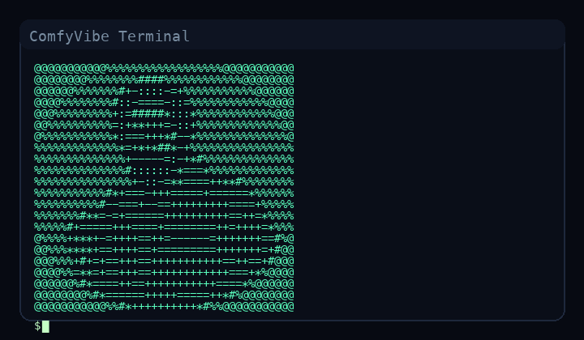

MCP FOR COMFYUI
Automate ComfyUI like a creative technologist.
ComfyVibe turns node graphs into programmable, agent-ready workflows. Extract, store, parameterize, and run ComfyUI pipelines with a first-class MCP server.

Extraction as a first-class tool
Pull workflows directly from image/video artifacts and push them into your library.
MCP-native automation
Drive ComfyUI with LLM agents and IDEs using MCP tools that feel like real APIs.
Workflow intelligence
Normalize formats, validate params, and keep workflow metadata consistent.
Run with confidence
Queue, monitor, and retrieve results with built-in ComfyUI client utilities.
ComfyUI Read Tools
comfy.nodes.listcomfy.queue.getcomfy.history.getcomfy.models.listcomfy.models.getcomfy.embeddings.list
Workflow Tools
workflows.listworkflows.getworkflows.params.getworkflows.saveworkflows.deleteworkflows.runworkflows.waitworkflows.extract_from_artifactworkflows.import_from_artifact
____ _ _ _
/ ___|___ _ __ ___ _ __ | | | (_)
| | / _ \| '_ ` _ \| '_ \ | |_| | |
| |__| (_) | | | | | | |_) | | _ | |
\____\___/|_| |_| |_| .__/ |_| |_|_|
|_|
ComfyVibe is designed for the people who ship workflows as art, craft, and infrastructure. The MCP server is your programmable control layer; extraction is your memory.
Fully compatible with ComfyUI formats, ready for LLM orchestration.
Install
pip install -e .Run MCP Server
python -m comfy_mcp.mcp_server.cliExtract Workflow
python -m comfy_mcp.extraction.adapter extract_and_write ./artifact.png